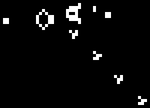

The Game of Life, also known simply as Life, is a cellular automaton devised by the British mathematician John Horton Conway in 1970. It is a zero-player game, meaning that its evolution is determined by its initial state, requiring no further input. One interacts with the Game of Life by creating an initial configuration and observing how it evolves. It is Turing complete and can simulate a universal constructor or any other Turing machine.
Rules The universe of the Game of Life is an infinite, two-dimensional orthogonal grid of square cells, each of which is in one of two possible states, live or dead (or populated and unpopulated, respectively). Every cell interacts with its eight neighbours, which are the cells that are horizontally, vertically, or diagonally adjacent. At each step in time, the following transitions occur:
1.Any live cell with fewer than two live neighbours dies, as if by underpopulation.
2.Any live cell with two or three live neighbours lives on to the next generation.
3.Any live cell with more than three live neighbors dies, as if by overpopulation.
4.Any dead cell with exactly three live neighbors becomes a live cell, as if by reproduction.
These rules, which compare the behavior of the automaton to real life, can be condensed into the following:
1.Any live cell with two or three live neighbors survives.
2.Any dead cell with three live neighbors becomes a live cell.
3.All other live cells die in the next generation. Similarly, all other dead cells stay dead.
The initial pattern constitutes the seed of the system. The first generation is created by applying the above rules simultaneously to every cell in the seed, live or dead; births and deaths occur simultaneously, and the discrete moment at which this happens is sometimes called a tick.Each generation is a pure function of the preceding one. The rules continue to be applied repeatedly to create further generations.
Origins In late 1940, John von Neumann defined life as a creation (as a being or organism) which can reproduce itself and simulate a Turing machine. Von Neumann was thinking about an engineering solution which would use electromagnetic components floating randomly in liquid or gas. This turned out not to be realistic with the technology available at the time. Stanislaw Ulam invented cellular automata, which were intended to simulate von Neumann's theoretical electromagnetic constructions. Ulam discussed using computers to simulate his cellular automata in a two-dimensional lattice in several papers. In parallel, von Neumann attempted to construct Ulam's cellular automaton.
Original QDN version: Game of Life by Matrix [Qe24TgRFHjB9AAbNs6X61LqspDjgQiMgiU]